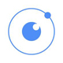
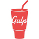

熟悉HTML5,运用HTML+CSS搭建网页，深刻理解Web标准和标签语义化,熟悉html5新特性
熟练运用Webstorm、IntelliJ IDEA等编译器和Chrome、FF、IE等浏览器进行代码设计与调试
能熟练运用CSS对网页进行设计，并适当运用CSS3使页面在现代浏览器上更好地呈现。
熟悉并能使用Less、Sass等预编译工具来提高CSS代码的模块化程度与编写效率。
掌握原生JS，也能熟练运用JQuery等框架来编写代码。
对JavaScript面向对象编程思想有一定的了解和编程经验。


